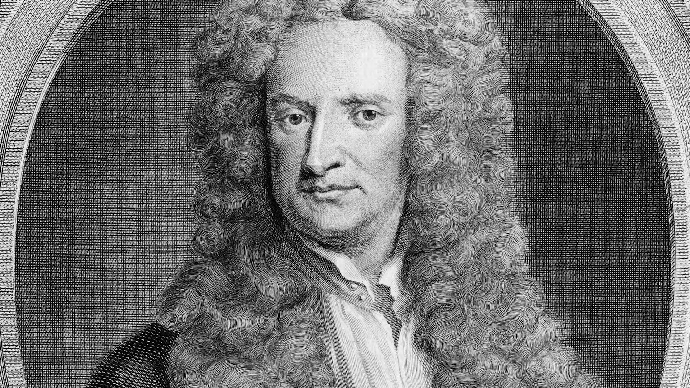

SIR ISAAC NEWTON

Matematician, physician and astronomer.
- He was born in England, on 25 December 1642 (acording to the Julian calendar).
- He is the father of Calculus.
- His most famous book is Principia Mathematica.
- His Alma Mater was "Trinity College, Cambridge."
- Newton was in a dispute with Leibniz about priority in the development of Calculus.
- Newton died in London, on 20 March 1727.